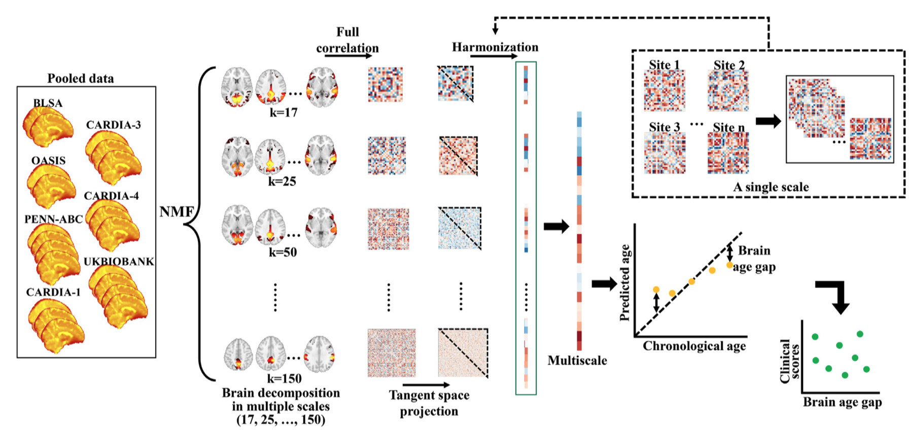
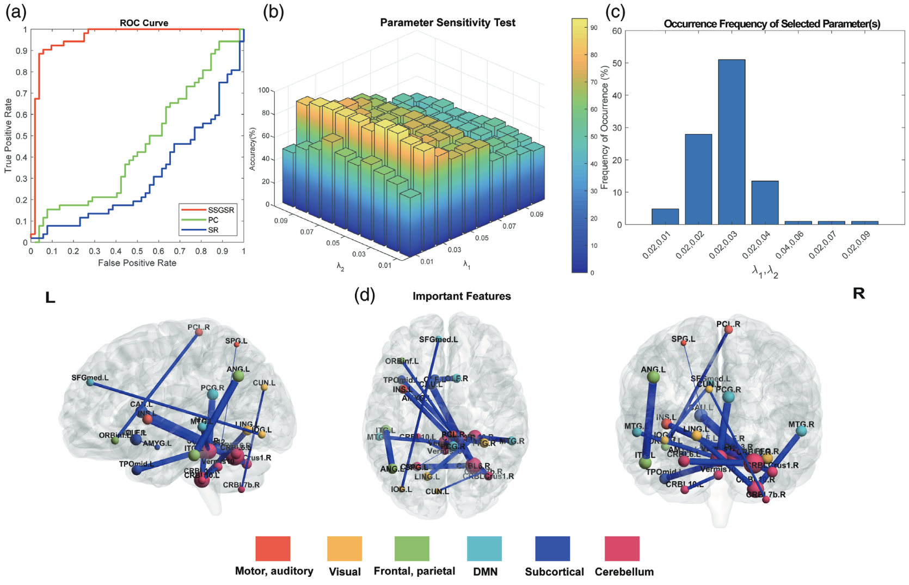
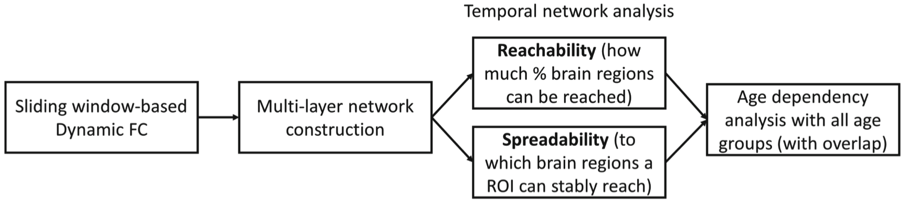
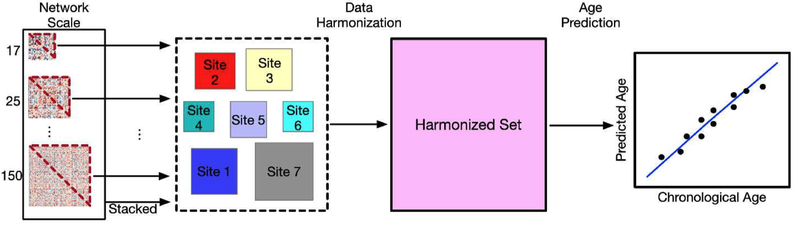
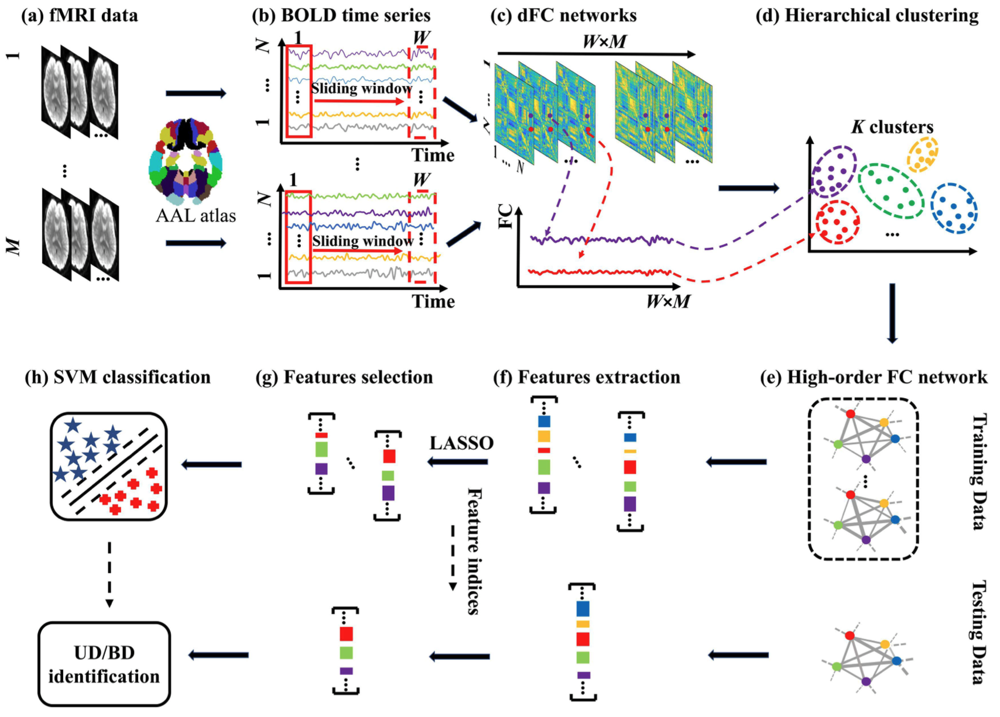
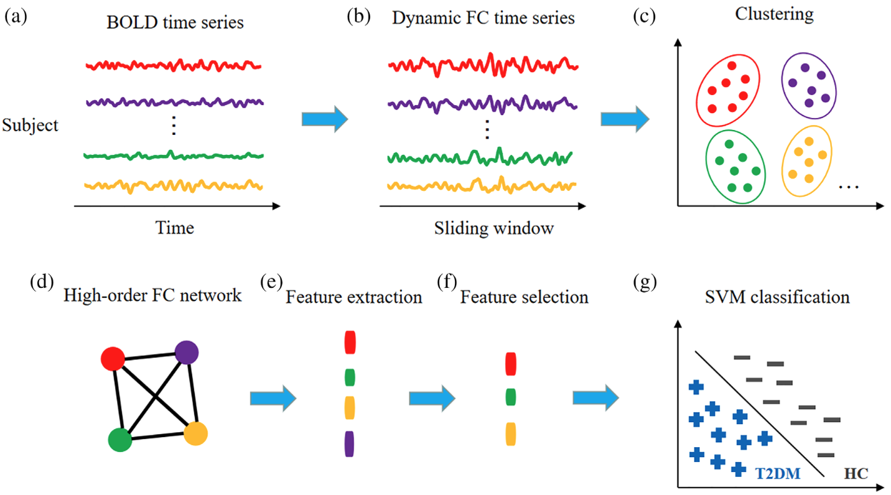

Neuroimaging
harmonization
Developing methods to address differences across imaging sites and improve the comparability of structural and functional connectivity.
Explore related workCOMPUTATIONAL NEUROIMAGING
Instructor · MGH & Harvard Medical School
Understanding the brain,
one connection at a time.
I develop computational methods to understand brain connectivity—bringing together multi-site neuroimaging, harmonization, and machine learning.
I work at the intersection of brain connectivity and computational neuroimaging, developing methods that help make multi-site brain studies more comparable and informative.
I am an Instructor at the Laboratories for Computational Neuroimaging, Athinoula A. Martinos Center for Biomedical Imaging, at MGH and Harvard Medical School. My work focuses on harmonization methods for brain connectivity, hosted by Dr. Iman Aganj and Dr. Bruce Fischl. I received an NIA K99/R00 award for joint harmonization in brain connectivity and its application to aging.
Previously, I was a postdoctoral researcher at the University of Pennsylvania, co-supervised by Dr. Haochang Shou and Dr. Christos Davatzikos, studying brain aging through multiscale functional connectivity analysis.
During my Ph.D., I worked with Dr. Han Zhang and Dr. Dinggang Shen at UNC–Chapel Hill. I developed the BrainNetClass toolbox and helped pioneer an infant-dedicated resting-state fMRI analysis pipeline for the Baby Connectome Project.
Research, papers, and milestones.
From harmonizing measurements
to understanding the lifespan.
Developing methods to address differences across imaging sites and improve the comparability of structural and functional connectivity.
Explore related workStudying multiscale functional networks, from early infant development to brain aging and neurodegenerative disease.
Explore related workBuilding computational tools and learning models for brain network analysis, classification, and translational neuroimaging.
Explore related workA selection of papers representing my research interests. * Equal contribution.







Try a different keyword or year.
Code and tools accompanying my research.
For research inquiries and academic conversation.
zzhou22@mgh.harvard.edu zhenzhou.1993@gmail.com